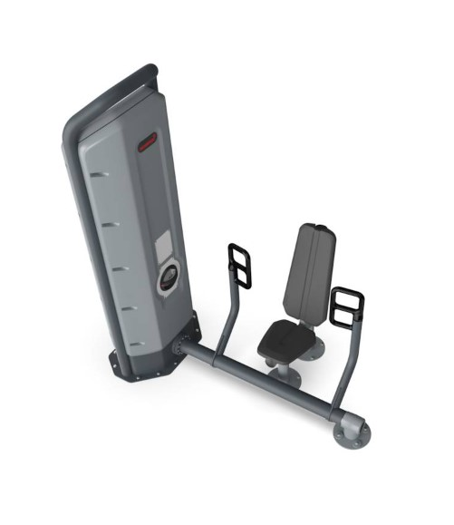
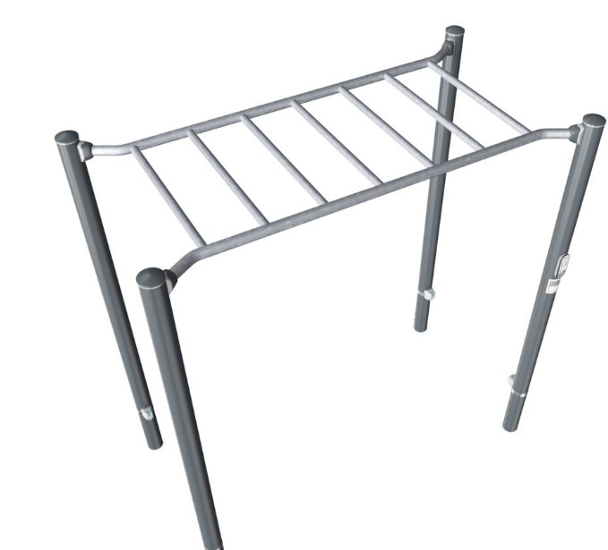
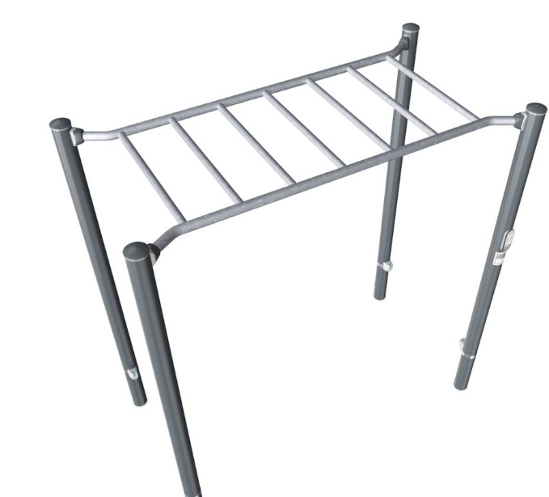

Chest Press
Como fazer
Para utilizar o chest press, deite-se em um banco, segure uma barra ou halteres na largura dos ombros, empurre o peso para cima estendendo os braços e depois retorne à posição inicial controladamente, dobrando os cotovelos.

Shoulder Press
Como fazer
Para realizar um shoulder press, segure uma barra á altura dos ombros e empurre o peso acima da cabeça, estendendo os braços, antes de retornar à posição inicial.
Decline Bench Press
Como fazer
Para utilizar o decline bench press, ajuste o banco em um ângulo declinado, deite-se de costas no banco, segure a barra com as mãos ligeiramente mais largas que a largura dos ombros, abaixe a barra em direção ao peito controladamente e, em seguida, empurre a barra para cima, estendendo os cotovelos até que os braços estejam totalmente estendidos.
 
